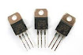

segunda generacionEl invento del transistor hizo posible una nueva generación de computadoras
más rápidas, con menores necesidades de ventilación y más pequeñas debido a que 200
transistores podían acomodarse en la misma cantidad de espacio que un tubo de vacío.
La forma de comunicación con estas nuevas computadoras era mediante lenguajes más avanzados
que el lenguaje de máquina, y que reciben el nombre de «lenguajes de alto nivel» o lenguajes
de programación, como Fortran y Cobol.
